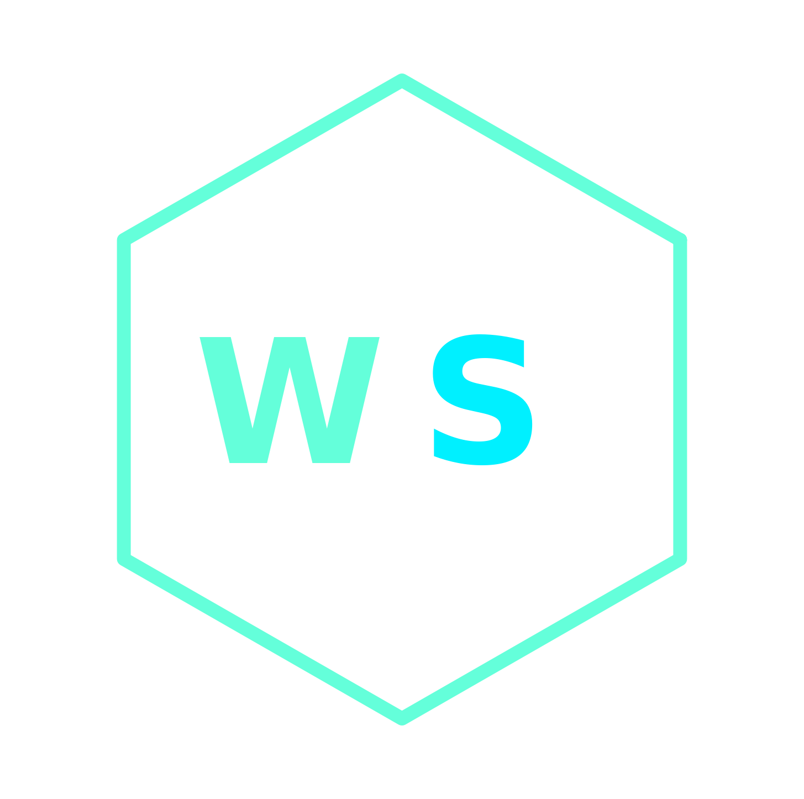
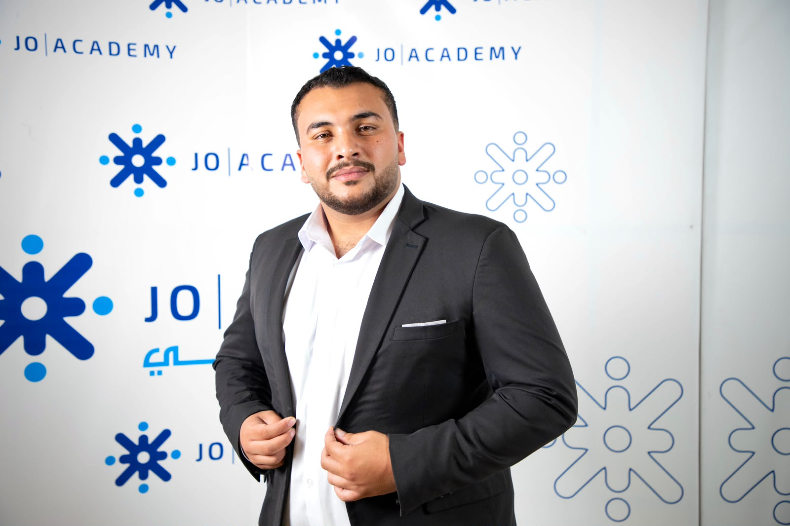

Hi, my name is
I'm a software engineering student and frontend developer focused on building modern, accessible, and high-quality web applications.
Hello! My name is Waleed, and my journey into coding started with pure passion and ambition during high school. Back then, I knew without a doubt that software was the path I wanted to dedicate my life to. That drive led me to excel in my high school studies and pursue my academic foundation at Al-Balqa Applied University.
Having recently graduated at 22 with a degree in Software Engineering, I stepped directly into the professional world. It was through real-world industry experience that I discovered my ultimate focus: Frontend Development and crafting exceptional web interfaces. Since then, I’ve been constantly learning, refining my skills, and building practical web applications.
Today, I'm fully committed to pushing my technical boundaries every day. Driven by continuous learning and unwavering dedication, my ultimate vision is to become one of the leading software developers in the Middle East.

Aug 2020 – Feb 2026
I’m not just building user interfaces; I’m crafting the foundation for something much bigger. My journey is driving me toward becoming a visionary software engineer—building scalable, complex, and impactful applications that make a difference. Stay tuned, exciting and ambitious projects are currently in the making.
Say Hello